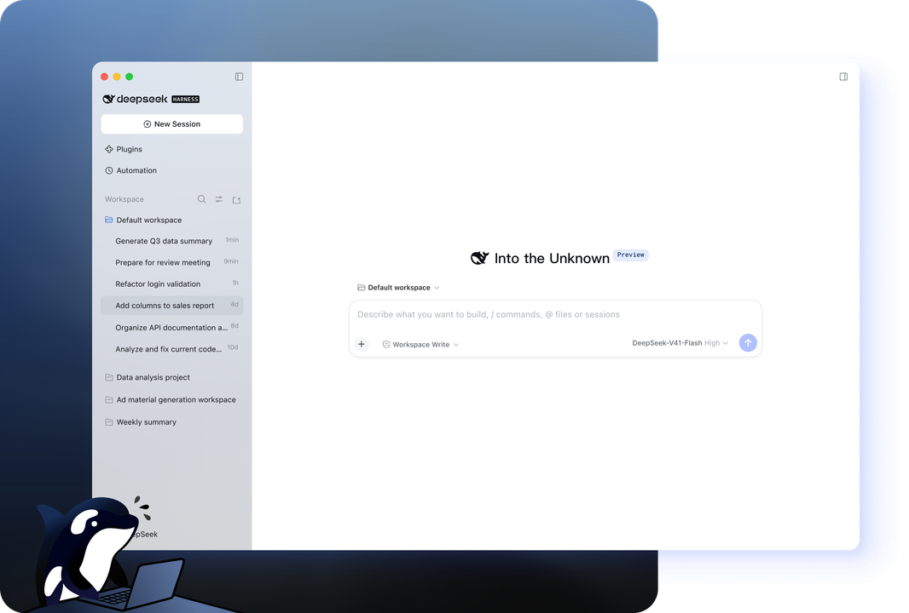
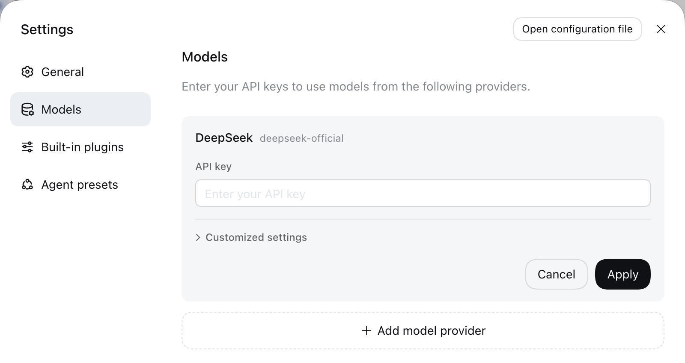
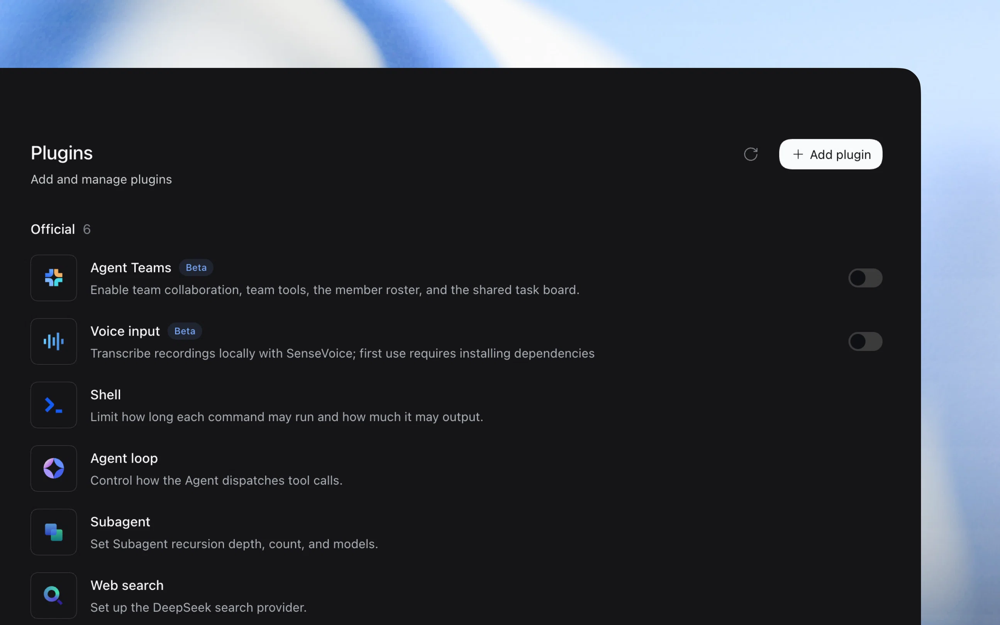

DeepSeek Harness
Same barrier. More ambition. Use an agent with your project files, try a useful change and test what happened. This guide follows the workshop’s three capabilities: Access Local Files, Create Skills and Automate Workflows.
DeepSeek is the model provider; Harness is the environment that connects a selected model to files and tools. The workshop uses the desktop Harness, with some presenter-specific plugins.
Best for
Taking the tool you have already tested and improving it in its own project folder.
Start here
DeepSeek Harness, working model access, a practice folder and a copy of your Build 01 files. Check setup before the timer, or follow the demonstration with a partner.
Swap roles: whoever talked now drives. With setup ready, use Exercises 2–4 to inspect, change and test one thing. Skills and workflows are extensions for continued exploration. You are finding out whether the idea is buildable.
Official documentation checked on 6 November 2026. Your supplied Margins screenshot is the workshop reference. Practice prompts below have not been run in a live participant session; model access, permissions and previews depend on the installation.
Exercise 1: Open Harness and choose your project
Use DeepSeek Harness for desktop from the official download page. The current Mac installer requires Apple silicon and macOS 13 or later. The ordinary DeepSeek chat app is a different starting point.
- Open Harness and use the model access configured for the workshop. Check the selected model before sending a task.
- Create a practice folder and put a copy of your Build 01 files in it. Keep a separate working copy so you can compare changes.
- Use the workspace control to add and select that folder, then start a New Session.
- Check the permission control. Workspace Write is a starting point for work inside the practice folder; keep approval prompts enabled where your setup provides them.

Model access is not ready yet?
Account sign-in and a manually configured provider are different routes. Follow the presenter’s route. For an API-key setup, the developer documentation uses Settings → Models: enter your own key in the DeepSeek card and save. Select the configured model in the session picker. Account and API access can involve usage charges; check the service you selected before starting.

The Web UI quickstart also covers workspace selection. It starts from an already-running Web UI; the desktop route above does not require you to install command-line tools.
Exercise 2: Access Local Files
One partner drives; the other talks. First establish what the agent can see. Use your copied Build 01 tool, or begin with an empty practice folder.
Look only inside this practice workspace. List its files and identify the file that opens my classroom tool. Explain what the tool currently does in plain English. Do not edit anything yet. If the folder is empty, tell me and propose the smallest first version for our barrier.
Compare the reply with the folder you selected. If it is looking at the wrong files, correct the workspace before continuing. The official quickstart describes agents reading and editing workspace files under the active permission policy.
Local file access does not mean the model runs on your Mac. Content used in a task may go to the selected provider. Use invented examples rather than identifiable student work; consult the Harness privacy information for that route.
Exercise 3: Same barrier. More ambition.
Use a hesitation you noticed in Test 01. Ask for one useful change to the existing tool, then review what changed.
Our barrier is that a Grade 7 student loses their place in a multi-step maths problem. Improve the tool in this workspace so it shows the current step clearly and lets the student tick it off. Keep the language at Grade 5, include reset, and do not add sign-in. Work from the existing files. Explain the proposed change before editing, keep the change small, and tell me how to test it.
If the folder is empty, use your prompt spine to request a first version. For a simple web tool, add: “Put the HTML, styles and behaviour in one file called index.html, without external libraries.”

Your practice tool can stay in a browser. You do not need the simulator or the presenter’s other plugins to explore the build-and-test loop.
Exercise 4: Preview, test and change one thing
Open the tool in an available preview or give me a local browser address. If it needs a server, explain how to start and stop it. Give me three actions that check the current-step indicator, next-step control and reset.
- Use the tool yourself once, then reset it.
- Let your colleague use it without an explanation. Watch where they hesitate.
- Describe one observed problem, the expected behaviour and what happened instead.
- Ask for a small correction and repeat the same test.
After I completed two steps and pressed Reset, the progress indicator stayed on Step 2. Reset should return the whole tool to Step 1. Fix this without changing the task or the language level, then explain how to check it.
At the end of the eight-minute Build 02 window, record what you learnt and what you would try next. A finished app is not required. The next two exercises are extensions for the demonstrations and continued iteration.
Exercise 5: Create Skills
Capture the checks you want the agent to repeat. A skill bundles instructions for a type of work; a plugin can provide capabilities and tools. They are related, but not interchangeable.
Create a project skill called classroom-tool-check. It should inspect a small classroom web tool for the target grade, reading level, a clear first action, obvious progress, working reset and use of sample data. It should report findings before making changes. Save it in the project’s supported skills location, show me the file, and explain how to invoke it.
The official skills reference documents project skills under .dsh/skills, with bundles such as classroom-tool-check/SKILL.md. Ask Harness to confirm the path it actually created and that the skill is available in this workspace.
Use classroom-tool-check on this tool. List the checks you performed, your observations and one useful next change. Do not edit the tool during this check.

Start with the skill you just wrote. Additional plugins are optional; the presenter’s App Studio setup is a later extension.
Exercise 6: Automate Workflows
Turn the checks into a small process that you can run again. Begin with a task you trigger yourself; a schedule is a separate choice for later.
Run classroom-tool-check on this practice tool. Save a short teacher-check.md report in this workspace with the barrier, the checks performed, any problems and the next useful change. Keep the tool unchanged. Do not upload, send or publish anything.
Open the saved report and compare it with what you saw. Then try the process again after one change to the tool. Does the report notice what improved and what still needs work?
Check whether this tool can run as a static website on GitHub Pages. List the files to publish and anything that would fail there. Check for private data or credentials. Give me the steps and stop before uploading anything.
Use the GitHub Pages guide if it is a static tool, or explore Vercel when the project needs more. Return to Barrier → Sketch → Prompt → Build → Test for your next iteration.